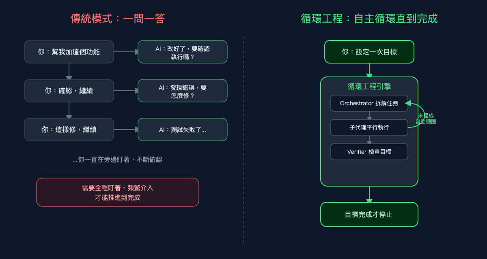
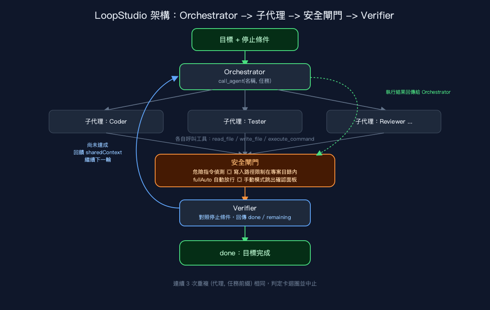

把任務交給 AI，不用再守著螢幕等它做完
循環工程就是讓這件事變可能的方法。這篇文章會介紹 AITerm LoopStudio 怎麼實作它的——以及為什麼它讓我的開發流程整個不一樣了。
說真的，這個模式你應該不陌生：打一段需求，AI 吐一段程式碼，你說「這裡不對」，AI 改，你再說「繼續」——這樣來來回回個五次、十次，任務才終於做完。全程幾乎沒辦法離開螢幕，因為 AI 每走一步都要你先點頭才行。
AITerm 的 LoopStudio 想解決的，就是這件事。它背後有個核心概念，叫做「循環工程」（Loop Engineering）：目標只需要講一次——AI 會自己拆解任務、自己執行、自己檢查，直到目標真的做完才停。不需要你一直守在旁邊回覆。

為什麼「一問一答」不夠用
一問一答最大的問題，不是「AI 不夠厲害」，而是人變成了流程裡少不了的環節。任務越複雜、步驟越多，你就得在旁邊盯越久——確認、修正、再確認，這個角色其實吃掉了大量本來可以拿去做其他事的注意力。
更麻煩的是，很多任務本來就是多個階段串起來的：先寫程式碼、再補測試、再自我審查、再跑一次驗證……每個階段都要人工介入的話，AI 再強也沒辦法展現「自主」的價值，因為推進的節奏始終被你的回覆速度卡住。
目標說一次，剩下讓迴圈自己跑
LoopStudio 的用法很直接：你設定「目標」和「停止條件」，按下開始，後面的事它自己來。

整套系統分成三個角色：
Orchestrator（總指揮） 負責拆解目標。它不會自己動手寫程式或跑指令，而是透過一個叫 call_agent 的工具，把子任務一個一個派給合適的子代理——像是「這段交給 Coder」、「這段交給 Tester」。
子代理（Sub-Agent） 才是真正動手的角色。每個子代理都有自己的身份設定（AITerm 內建了 Coder、Tester、Reviewer、DevOps、Security Auditor、Architect 等九種角色，可以直接拿來用），接到任務後，會自己呼叫 read_file、write_file、execute_command 這些工具去讀寫檔案、跑指令，一路做到沒有下一步為止，再把結果回報給 Orchestrator。
Verifier（驗收者） 是整個循環能夠「自主」跑起來的關鍵。每一輪 Orchestrator 派工結束後，Verifier 會拿著你一開始設的停止條件，去比對目標達成了沒有。如果還沒，它會列出「已經完成什麼」「還差什麼」，這份回饋會被寫進一個持續累積的上下文（sharedContext），下一輪 Orchestrator 就會看著這份回饋繼續補齊。這樣一直跑，直到 Verifier 說「done」，或是達到你設定的最大輪數為止。
也就是說，推進迴圈的不是你的下一句話，而是 Verifier 對目標的判斷。這正是「循環工程」和傳統聊天式開發最根本的差異。
自主不等於失控：危險的那一步，決定權還是在你
讓 AI 自己跑迴圈、自己執行指令，聽起來蠻讓人捏一把冷汗的——萬一它跑了什麼危險指令，或不小心寫到專案目錄之外怎麼辦？這正是 LoopStudio 有內建「安全閘門」的原因。
每個子代理要執行指令之前，系統都會先做兩件事：第一，比對指令是不是「危險操作」（像 rm -rf、sudo、強制 git push、格式化磁碟這類）；第二，確認這個指令的寫入目標有沒有真的落在你指定的專案目錄裡——就算是透過 >、tee、cp、sed -i 這種間接寫入，也照樣會被攔下來檢查。遇到無法確認寫入位置的狀況，一律當作「不安全」處理，不會直接放行。
如果踩到這兩條線，系統有兩種應對：開了「全自動」模式的話就自動放行；沒開的話，它會停下來，跳出一個確認面板，把「這個指令要幹嘛」講清楚，等你點頭才繼續。換句話說，自主循環幫你擺脫的是「要一直確認瑣碎步驟」這件事——但真的有風險的操作，決定權還是在你這邊。
不會卡死，也不會變黑盒子
循環工程也不是「叫它跑就一直跑到天荒地老」。系統會記錄最近三次「哪個代理、做什麼任務」的組合，如果連續三次都一樣（同一個代理、同樣的任務前綴），就會判定這是卡住了的死循環，主動中止，而不是傻傻燒完你設的所有輪數。整個執行過程的每一步——誰被指派了什麼、呼叫了哪些工具、Verifier 給了什麼回饋——都會即時顯示在「執行追蹤」面板裡，讓複雜的自動化流程不會變成一個完全看不透的黑盒子。
循環工程帶來的根本轉變
循環工程想解決的事情其實很簡單：把「一直推進任務」這件事，從人的手上還給一個會自我檢查的迴圈。 你只需要把目標和停止條件說清楚一次，接下來 Orchestrator 拆解、子代理執行、安全閘門把關、Verifier 驗收，一輪接一輪自己跑，直到真的做完為止。
如果你也常常被「一問一答」拖著跑複雜任務，不妨讓 AI 自己跑一次循環看看——說不定你會發現，很多時候你根本不需要一直守在螢幕前盯著。
如果這篇對你有幫助，歡迎幫我按個拍手（最多可以拍 50 下哦），也歡迎追蹤我，後續還會有更多 AI 輔助開發和自主代理架構的實戰分享。